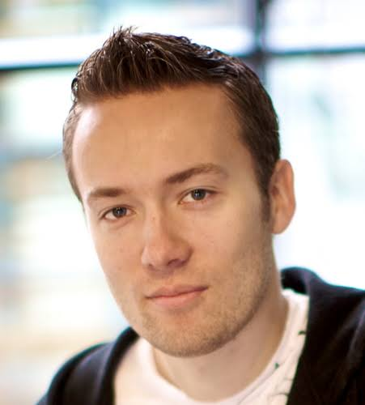
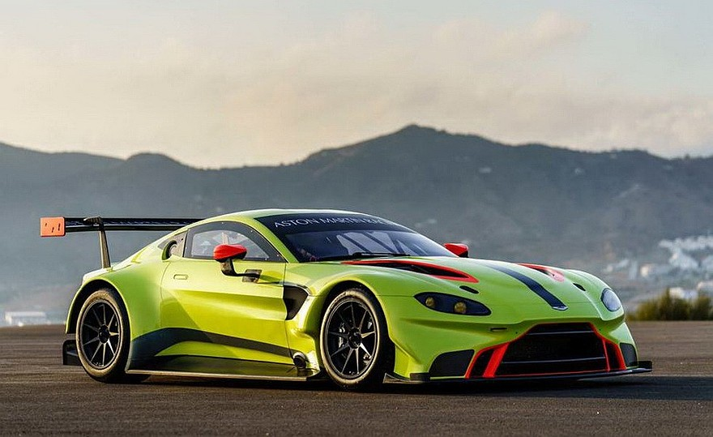
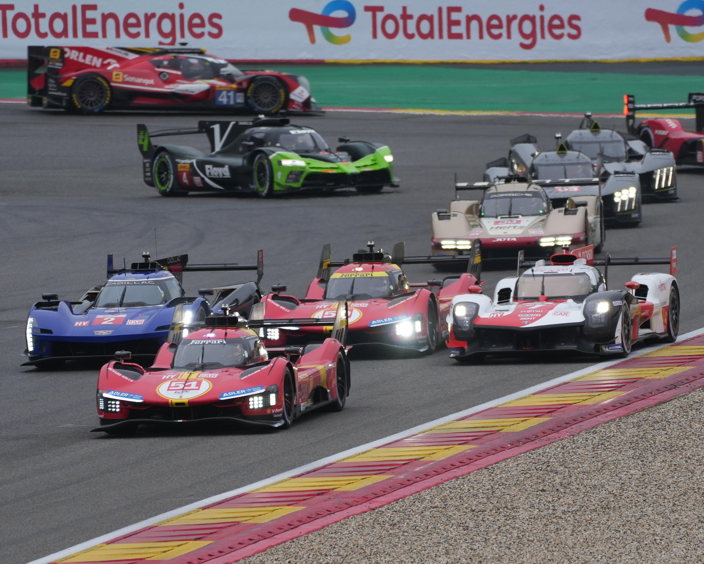

Гоночная карьера
Дата публикации:
Начало карьеры
Интерес к гонкам у Ханссона появился ещё в детстве — он смотрел трансляции 24 часов Ле-Мана по телевизору в Дании. Права он получил довольно поздно — только в .
Настоящая гоночная карьера началась в США. В году он полностью посвятил сезон American Le Mans Series (ALMS) — выиграл две гонки в классе LMP2 и стал серебряным призёром по итогам года.
В году его признали «Новичком года» (Rookie of the
Year) в ALMS. Ханссон говорил, что гонки в этой серии дали ему навыки уличного
боя
— умение работать в плотном потоке машин.

24 часа Ле-Мана
Ханссон впервые вышел на старт легендарного марафона в году — за рулём Morgan LMP2-Nissan команды OAK Racing. В классе LMP2 он финишировал 7-м.
Уже в году он поднялся на подиум — серебро в классе LMP2 и 8-е место в абсолюте.
Главное достижение пришло в году: за рулём Aston Martin Vantage GTE команды Aston Martin Racing Ханссон победил в классе LMGTE Am. Это его самая известная гоночная победа.
Ещё одно попадание в призы случилось в году — бронза в классе LMGTE Am на Porsche 911 RSR.

Чемпионат мира WEC
Параллельно с Ле-Маном Ханссон выступал в FIA World Endurance Championship (WEC) — чемпионате мира по гонкам на выносливость.
В году вместе с Olivier Pla и Alex Brundle за команду OAK Racing он стал серебряным призёром сезона в классе LMP2.
В году вместе с Aston Martin Racing Ханссон стал чемпионом мира в классе LMGTE Am.
В году — серебро в LMGTE Am за команду Abu Dhabi-Proton Racing.
А в году перешёл в Rebellion Racing, где выступал вместе с Nicolas Prost и другими пилотами.
Машины и философия
За карьеру Ханссон пилотировал разные машины: Morgan LMP2-Nissan, Ligier JS P2-Honda, Oreca 07-Gibson, Aston Martin Vantage GTE и Porsche 911 RSR.
Особенно он любил Morgan от OAK Racing — называл её фантастической машиной
.
Ханссон часто сравнивает программирование и гонки: В программировании ты меняешь алгоритм, чтобы
он работал быстрее, и это можно измерить — например, 14 секунд превращаются в 9. В гонках то же
самое — есть время круга, есть результат
.

«Путь от любителя до уровня профессиональных партнёров по команде — очень затягивающий».
— Давид Хейнемейер Ханссон